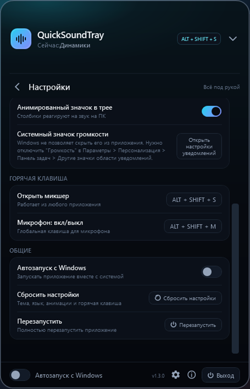

Как выключать микрофон горячей клавишей в Windows
Чихнули во время стрима или созвона? Быстрый mute микрофона одной клавишей спасает. Рассказываем, что умеет Windows и как сделать клавишу, которая работает везде.
Что есть в Windows
В Windows 11 есть сочетание Win + Alt + K, но оно выключает микрофон только во время звонка и только в программах, которые поддерживают эту функцию (например, Microsoft Teams). В играх, Discord и других программах оно может не работать.
Полностью отключить микрофон можно так:
- Нажмите Win + R, введите
mmsys.cplи нажмите Enter. - Откройте вкладку «Запись», дважды кликните по микрофону.
- На вкладке «Уровни» нажмите на значок динамика рядом с ползунком, чтобы выключить микрофон.
Это работает для всех программ, но занимает несколько кликов — в разгар игры так не сделаешь.
Глобальная горячая клавиша: QuickSoundTray
QuickSoundTray добавляет системную горячую клавишу для микрофона. По умолчанию это ALT + SHIFT + M, сочетание можно поменять в настройках. Клавиша работает из любой игры и программы — сворачивать игру не нужно.
- mute микрофона одной клавишей — везде;
- своя горячая клавиша для открытия микшера;
- проверка микрофона и громкость записи в главном окне.

Частые вопросы
Выключает ли горячая клавиша микрофон для всех программ?
Да. QuickSoundTray выключает микрофон на уровне Windows, а не в отдельной программе, поэтому это работает в Discord, играх и любых звонках.
Можно ли поменять сочетание клавиш?
Да, в настройках QuickSoundTray в разделе «Горячая клавиша».